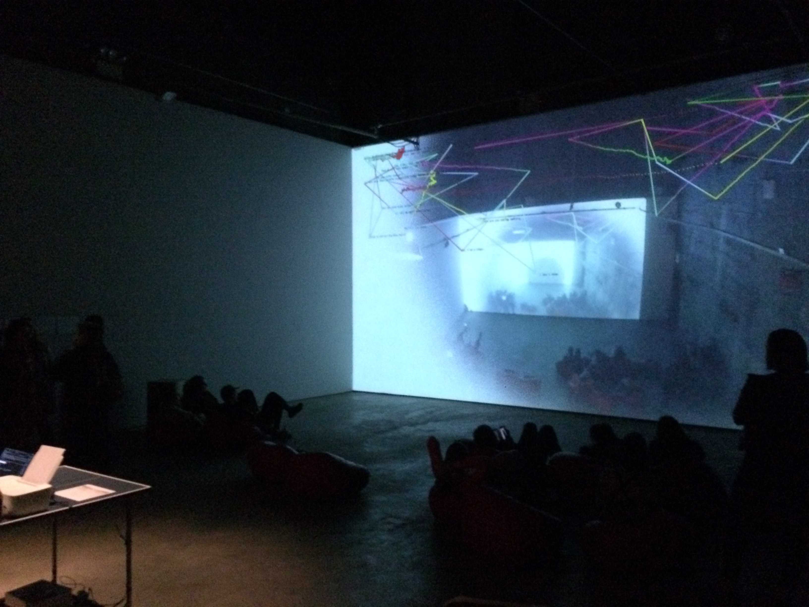

October 20 - November 19, 2017
We are excited to present verbolect at The BOILER. verbolect is an extended conversation between the chatbot Cleverbot and itself, continuously, for a month. The conversation will begin at the start of the exhibition and will be spoken audibly. The emotional content of the words spoken will be translated into an animated projection that will evolve in sync with the emergent mental state of the bot. A webcam will broadcast from the space via a 24-hour live feed on YouTube, so that viewers can eavesdrop at any time, day or night. “In essence, we’re forcing a robot to interrogate itself for an extreme duration. The emotional degree and intensity of each phrase spoken, and consequent reaction, will propel the projected ‘eye’ of the bot, as its emotive state changes. Where the conversation goes is completely out of our control.” (O’Connor)
Cleverbot is possibly the most human chatbot ever created, and Rollo Carpenter—its creator—is a leader in linguistic artificial intelligence. He and it have been featured on the podcast Radiolab and discussed in Brian Christian’s book The Most Human Human. Carpenter invented Cleverbot over twenty years ago and taught it to speak as one would a human child: one word at a time. Cleverbot’s responses are not pre-programmed, but are derived from its memory of past conversations—it learns exclusively from human input, and when someone speaks to it, Cleverbot responds to those words by finding how a human being previously responded to those same words. Since launching on the web in 1997, the number of conversations it has had is immense. “Cleverbot is in a sense a conversational Wikipedia, using the thoughts of millions of people from the past. It’s always AI that decides what to say, not users themselves, and the number of interactions from which replies derive number approximately 400 million. That’s, however, a tiny fraction of the approximately 10 billion things that have ever been said to it.” (Carpenter)
In this exhibition, the bot will be talking to itself, but because of its vast memory, the effect will be of ourselves, collectively, speaking to ourselves. “It occurred to us that this 24-hour stream is acting like a live broadcast of all of conversations being had simultaneously, as it is learning daily from the input of Cleverbot users around the world, and is indirectly broadcasting the inputs of those users. This conversation is not a closed feedback loop, but is actually getting input from Cleverbot users everywhere.” (Colton)
The main organizational construct of the projection is of a roving eye—simultaneously the idea of the bot searching outside of itself, into the world, looking for patterns, and of us, looking into its brain as if through a peephole. The emotional intensity of the words the bot speaks will dictate the substance, pace and movements of the projection’s machinations.
verbolect also draws inspiration from current AI innovations that allow computers to act more as humans do. At times, public experiments in this field have sparked fascination and alarm, as when Facebook chatbots reportedly began to speak their own invented language, unbeknownst to their creators. References in popular culture inform as well—the ominous uncanniness of AI entities such as Joshua in the film War Games, and HAL from 2001: A Space Odyssey, embody both our excitement and fear of truly intelligent machines. Relatedly, the ruthless binary quality of intrapersonal conversation is explored in Donald Barthelme’s short story “Game,” and non-verbally in Maria Abromovic’s durational piece “The Artist is Present.”
